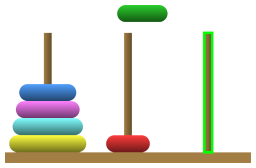
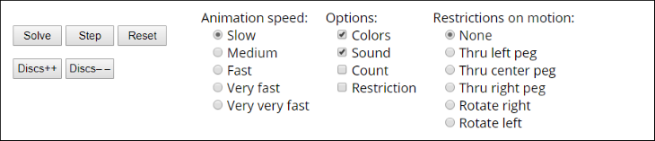
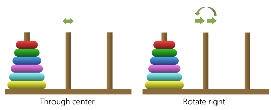

Ian Parberry's Towers of Hanoi Help
How to Play

The Towers of Hanoi puzzle has a set of discs of various sizes with holes in their centers so that they can be stacked on one of three pegs. Initially they are stacked on the leftmost peg in order of decreasing diameter from bottom to top. The aim is to move the discs to the rightmost peg by moving single discs from peg to peg without ever placing a larger disc on top of a smaller one.
Drag and Drop
Ian Parberry's Towers of Hanoi can be played with either a mouse or a touch screen. To move a disc using a mouse, simply place the mouse cursor inside the topmost disc on one of the pegs, then click down on the mouse button and drag the disc up to the clear area above the pegs and across to another peg. To move a disc using a touch screen, touch and drag the topmost disc instead. When you release the mouse button or lift your finger from the touch screen the disc will move to the closest legal peg, that is, the closest peg that is either empty or whose topmost disc is larger than the disc being dragged, subject to any restrictions on motion that may be in force. The closest legal peg automatically lights up in green when your disc is above the pegs, as shown in the above image.
The Controls
The controls can be found below the puzzle itself. To the left there are 5 buttons that control the animation and the number of discs. To the right of the buttons there is a set of radio buttons that control animation speed. To the right of that there are a small number of check boxes for various settings, including the sound and what is shown on the screen. On the far right there is a set of radio buttons that enforce selected extra restrictions on how the discs can move. Enforcing these restrictions makes the puzzle more challenging.
Autosolve
The Solve button begins animation of the solution, which you can pause and restart by clicking it again. The Step function will animate a single move. You can start autosolve at any time, even when you've started moving discs around. You will not be able to drag and drop while autosolve is running. If you wish to do so, first click the Pause button, then the Step button. You will be permitted to drag and drop once the current disc has arrived at its destination.
Reset
The Reset button resets the puzzle to the initial condition with all discs on the leftmost peg.
Move Counter
Checking the Count checkbox will display the number of moves used since the last reset at the top left of the puzzle. This count includes both moves made by the player and by autosolve.
Number of Discs
You can choose the number of discs from 3 to 10 using the Discs++ button to add a disc and the Discs– – button to remove a disc. The puzzle will reset each time.
Animation Speed
You can vary the animation speed by selecting the radio buttons labeled Slow, Medium, Fast, Very Fast, or Very Very Fast. You can even change the speed while autosolve is running. Slow, Medium, and Fast will slide the discs into place smoothly, while Very Fast will jump discs into place at a rate of about 4 per second. Very Very Fast will jump them into place one per animation frame, which is typically 30 moves per second.
Sound
If the sound effects are annoying, simply uncheck the Sound checkbox.
Restrictions on Motion
For an extra challenge, try to solve the puzzle with some extra restrictions on how the discs can be moved.
- The None radio button will remove all restrictions.
- The Through Left Peg radio button will allow only moves to and from the left peg, as shown in the image below (left).
- The Through Center Peg radio button will allow only moves to and from the center peg, as shown in the image below (center).
- The Through Right Peg radio button will allow only moves to and from the right peg, as shown in the image below (right).
- The Rotate Right radio button will allow only moves from the left peg to the center peg, from the center peg to the right peg, and from the right peg to the left peg, as shown in the image below (left).
- The Rotate Left radio button will allow only moves from the left peg to the right peg, from the center peg to the left peg, and from the right peg to the center peg, as shown in the image below (right).
If you check the Restriction checkbox, a small indicator will show which restriction is in place. If one of the Through Peg restrictions is in effect, a bidirectional arrow will appear above the peg in question as shown in the image left (right). If a Rotation restriction is in effect, the direction of rotation will appear above the center peg as shown in the image below (right).
You will not be able to change the Restrictions on Motion while autosolve is running. If you wish to do so, first click the Pause button, then the Step button. You will be permitted to change them once the current disc has arrived at its destination.